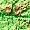
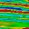

| Data set |
Reference (their format, may not match ours or yours, so
reformat if necessary) |
Web site |
Notes |

ETOPO1 topography and bathymetry |
Amante, C.,
and Eakins, B.W., 2009, ETOPO1 1 Arc-Minute Global Relief Model:
Procedures, Data Sources and Analysis: NOAA Technical Memorandum NESDIS
NGDC-24, 19 p.
http://www.ngdc.noaa.gov/mgg/global/relief/ETOPO1/docs/ETOPO1.pdf |
Download ETOPO1
|
This has ocean bathymetry and land elevations.
- Floating point binary version is probably the best.
Save it as a 16 bit integer, since the floating point values are
actually integers.
- GRD98 version has registration that is
misinterpreted by 1 degree in
longitude because of byte swapping issues in MICRODEM, so do not get that version.
- The Geotiff version is not registered, so you must
create a world file for it.
|
| SRTM 30 Plus |
Becker, J. J., D. T. Sandwell, W. H. F. Smith, J. Braud, B. Binder, J.
Depner, D. Fabre, J. Factor, S. Ingalls, S-H. Kim, R. Ladner, K. Marks,
S. Nelson, A. Pharaoh, R. Trimmer, J. Von Rosenberg, G. Wallace, P.
Weatherall., Global Bathymetry and Elevation Data at 30 Arc Seconds
Resolution: SRTM30_PLUS, Marine Geodesy, 32:4, 355-371, 2009.
|
http://topex.ucsd.edu/WWW_html/srtm30_plus.html |
SRTM 15+ for smaller areas, more detail |
 Sediment thickness
Sediment thickness |
Current version 3: E. O. Straume, C. Gaina, S. Medvedev, K. Hochmuth,K.
Gohl, J. M. Whittaker, R. Abdul Fattah, J. C. Doornenbal, and J. R.
Hopper(2019). GlobSed: Updated total sediment
thickness in the world's oceans. Geochemistry, Geophysics, Geosystems,
vol.20. DOI:
10.1029/2018GC008115
Older version 2: Whittaker, Joanne, Alexey Goncharov, Simon Williams, R.
Dietmar Muller, German Leitchenkov (2013) Global sediment thickness
dataset updated for the Australian-Antarctic Southern Ocean,
Geochemistry, Geophysics, Geosystems.
,
Issue 8,
DOI: 10.1002/ggge.20181
Oldest version 1:
Divins, D.L., Total Sediment Thickness of the World's Oceans & Marginal
Seas, NOAA National Geophysical Data Center, Boulder, CO, 2003.
|
http://www.ngdc.noaa.gov/mgg/sedthick/index.html |
Grid in Geotiff
and other less useful formats. If Geotiff is not present, MICRODEM via
GDAL can read the nc file. The current version 3 still has v2 in
the file names, but the data hole near Japan has been filled in. |
|
Sediment type distribution |
Adriana Dutkiewicz, R. Dietmar Muller, Simon O'Callaghan, and
Hjortur Jonasson, 2015, Census of seafloor sediments in the world's
ocean
Geology,
43 (9): 795–798.
G36883.1,
doi:10.1130/G36883.1,
http://geology.gsapubs.org/content/43/9/795.full |
ftp://ftp.earthbyte.org/papers/Dutkiewicz_etal_seafloor_lithology
|
|
 Predicted sea
floor ages. Predicted sea
floor ages. |
- Current verson: Muller, R.D., M. Sdrolias, C. Gaina, and W.R. Roest 2008. Age, spreading rates and spreading symmetry of the world's ocean
crust, Geochem. Geophys. Geosyst., 9, Q04006,
doi:10.1029/2007GC001743.
- Original version: MÜLLER, Roest, Royer,Gahagan, and Sclater (1997) in Journal of Geophysical Research.
|
Version 3:
https://www.ngdc.noaa.gov/mgg/ocean_age/ocean_age_2008.html |
Derived from models of plate spreading. There is a value about every 11 km.
There is no data on continental crust, and problematic regions of
oceanic crust. |

Magnetic
anomaly maps |
EMAG2:
2 arc minute grid, available as Geotiff
- Version 3: Brian Meyer, Richard Saltus, Arnaud Chulliat (2016): EMAG2:
Earth Magnetic Anomaly Grid (2-arc-minute resolution) Version 3.
National Centers for Environmental Information, NOAA. Model.
doi:10.7289/V5H70CVX, accessed 13 Aug 2016.
- Version 2: Maus, S., Barckhausen, U., Berkenbosch, H., Bournas, N., Brozena, J., Childers, V., Dostaler, F., Fairhead, J. D., Finn, C., von Frese, R. R. B., Gaina, C., Golynsky, S., Kucks, R., Luhr, H., Milligan, P., Mogren, S., Muller, R. D., Olesen, O., Pilkington, M., Saltus, R., Schreckenberger, B., Thebault, E.,
and Caratori Tontini, F. 2007, EMAG2: A 2–arc min resolution Earth Magnetic Anomaly Grid compiled from
satellite, airborne, and marine magnetic measurements: Geochemistry, Geophysics, Geosystems,
vol. 10, no.8, DOI 10.1029/2009GC002471.
|
http://www.geomag.us/models/emag2.html |
|
| EGM2008: Geoid |
The development and evaluation of the Earth
Gravitational Model 2008 (EGM2008) - Nikolaos K. Pavlis, Simon A. Holmes,
Steve C. Kenyon, John K. Factor; Journal of Geophysical Research: Solid
Earth (1978-2012) Volume 117, Issue B4, April 2012
|
|
|